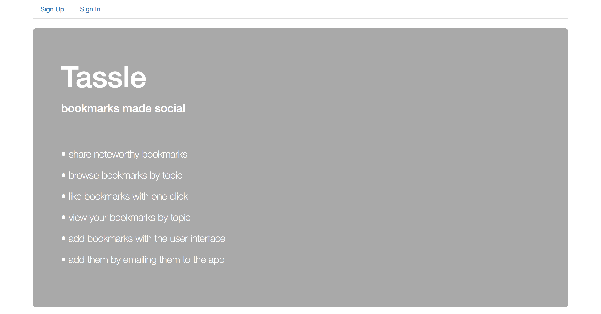
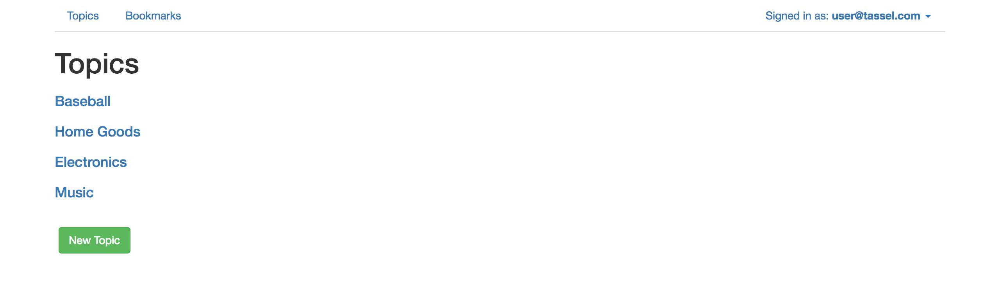
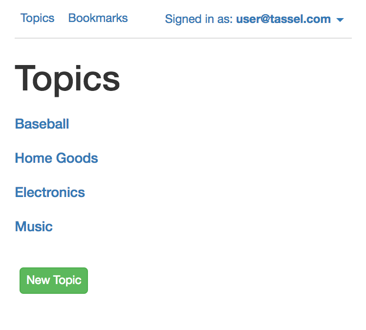
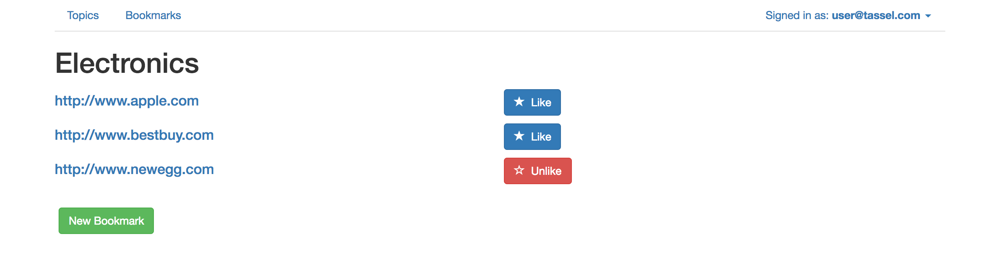
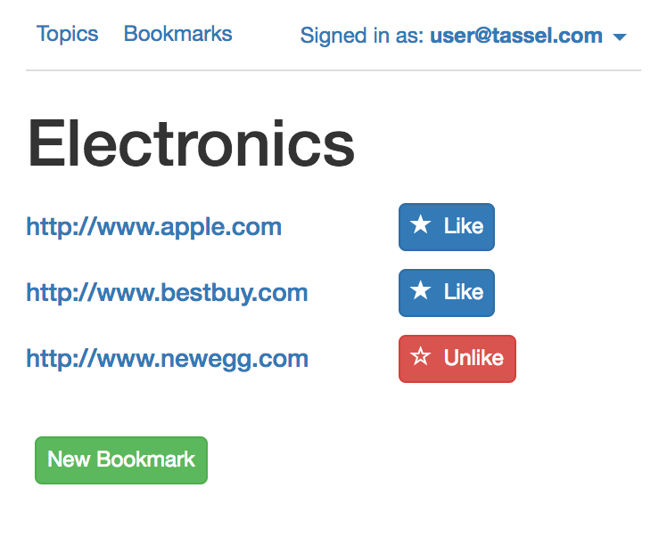
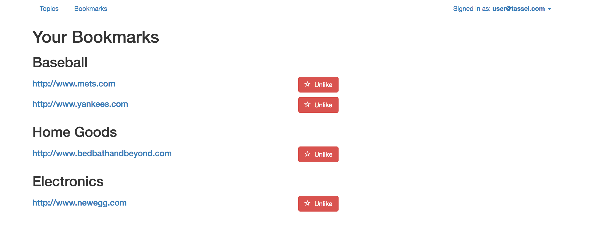

Tassel
An app for creating, managing, and sharing boomarks. Please see below for screenshots of this web app's layout and a brief overview of its features. Feel free to check out this web app online.
Checkout Web App 
Add bookmarks by topics via the user interface or by emailing the web app. Or simply browse previously contributed bookmarks by topic.
 'Like' bookmarks to add them to your personal list of bookmarks.
 Your personal list of bookmarks is automatically organized by topic.

Tassel is mobile responsive. No need to look any further if you're viewing this page vertically on your mobile device. If you're viewing this page on your desktop compouter, open it on your mobile device to see how things look.